Skin Studio native review, October 25
Actual desktop GPU captures at the requested logical window sizes. Select an image for its full size. These captures do not verify Android S Pen hover or touch gestures.
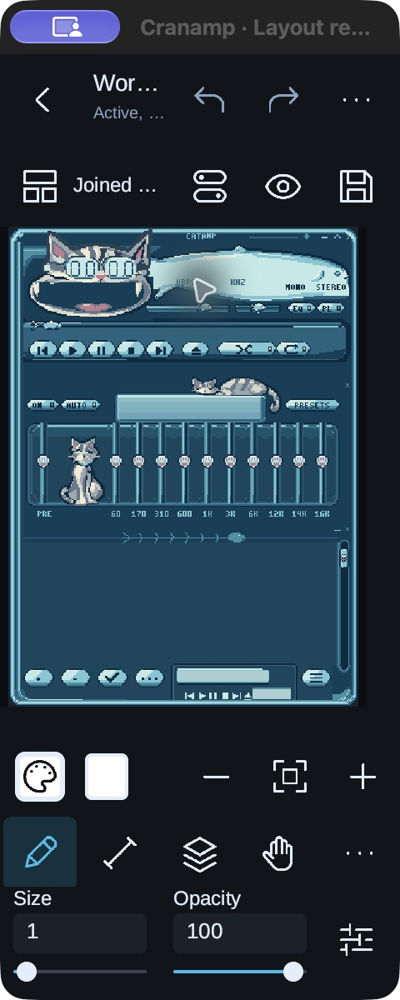
240 x 568Minimum window: stacked field labels and two quick swatches. 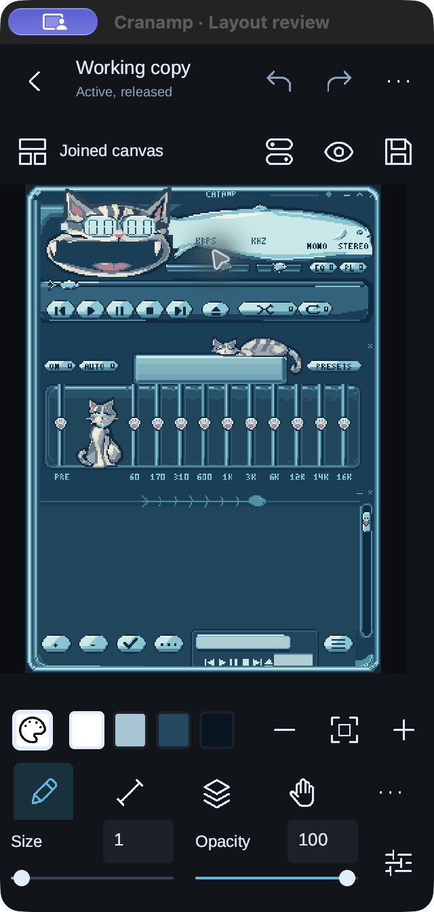
320 x 640Small phone: current properties stay visible above the tools. 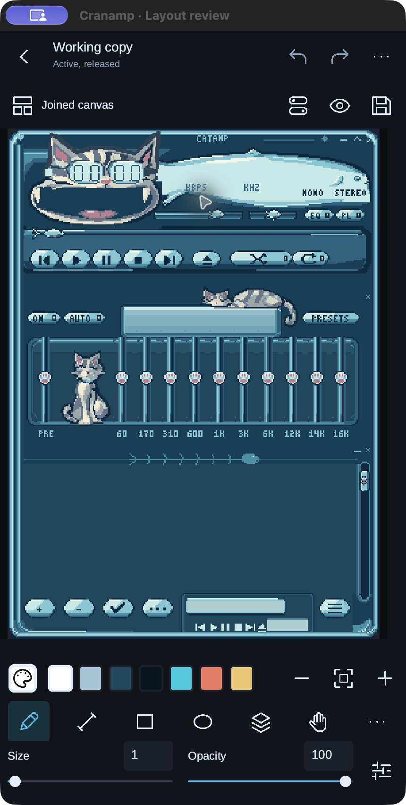
430 x 820Phone: saved colours and exact colour editing beside zoom. 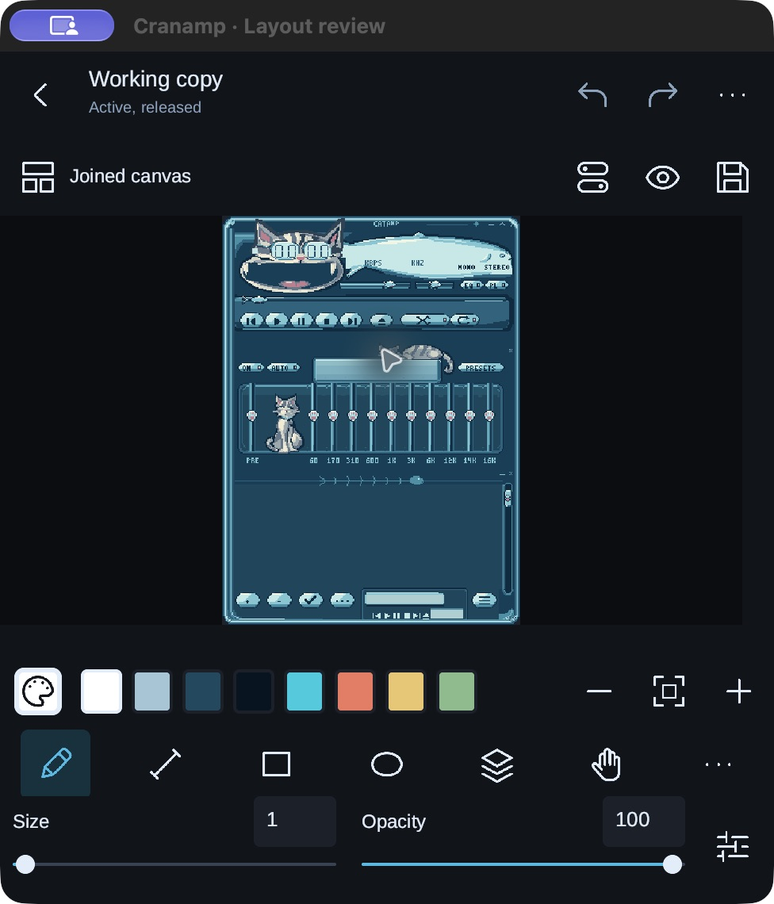
488 x 538Reference window: compact properties give the canvas 44 more pixels of height. 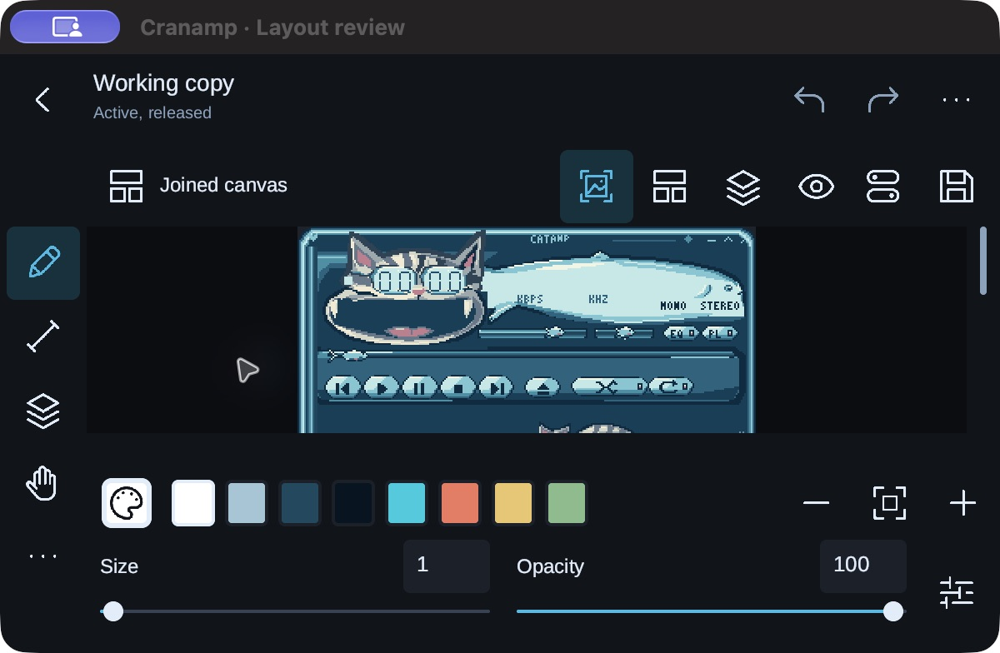
600 x 360Short window: readable initial scale; scroll to reach the rest of the skin. 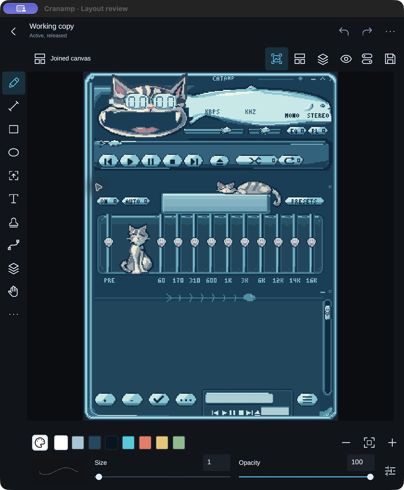
768 x 900Tablet: scope tabs and a vertical instrument strip. 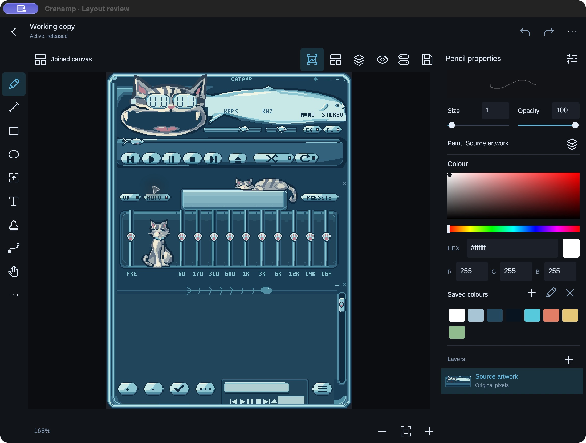
1100 x 800Wide tablet: persistent properties and exact colour controls. 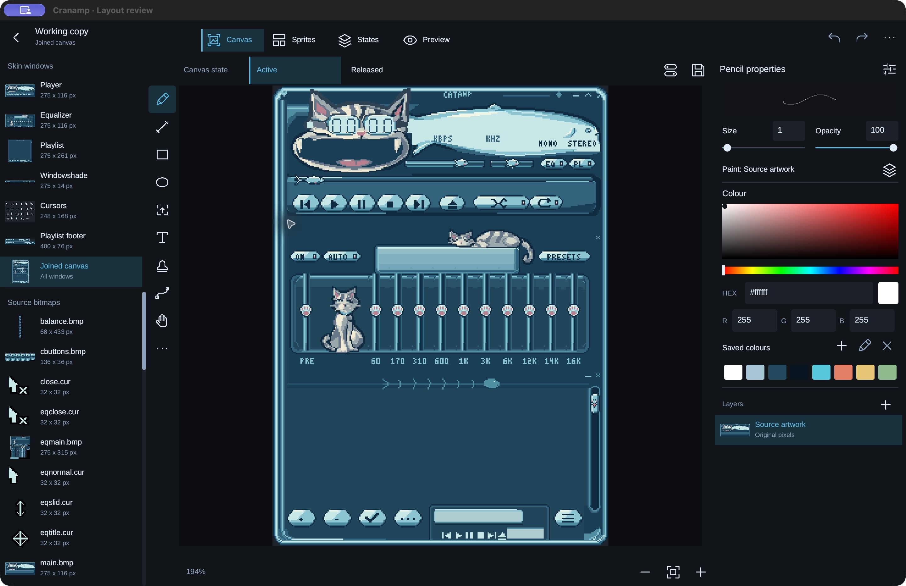
1440 x 900Desktop: source previews, canvas and current properties. 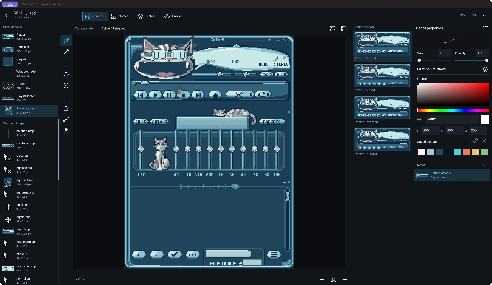
1920 x 1080Large desktop: state previews sit beside the canvas and current properties. 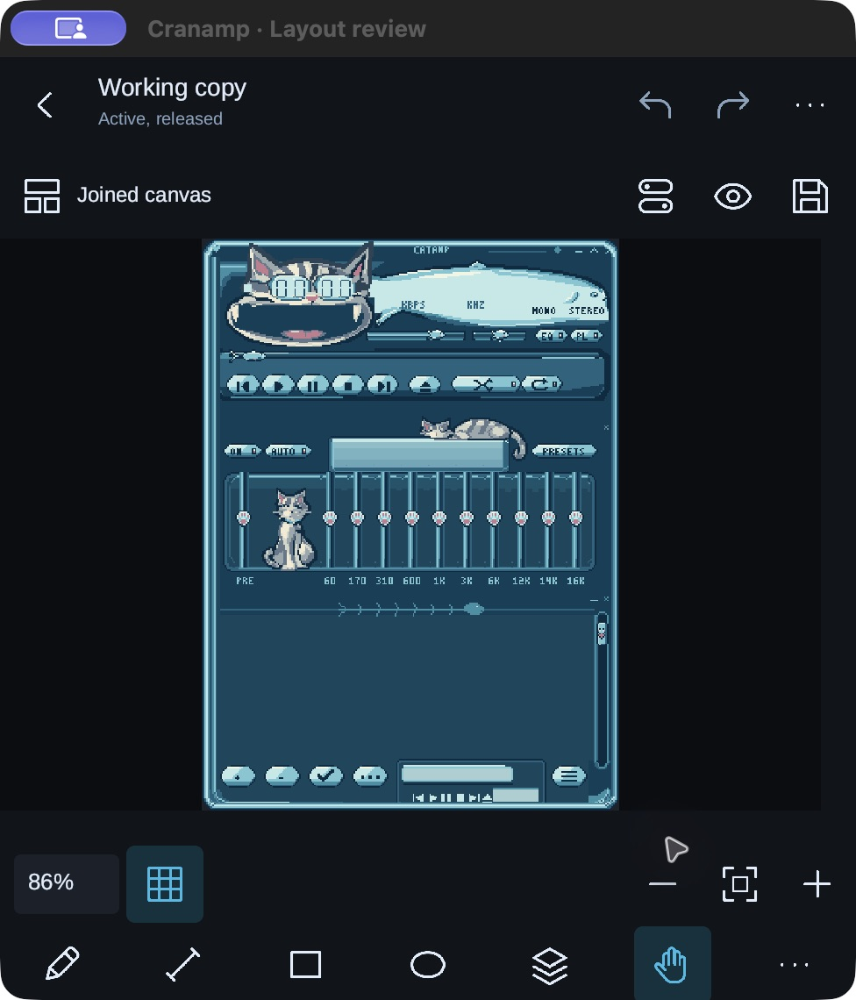
Pan selectedNavigation replaces paint properties and returns their height to the canvas. 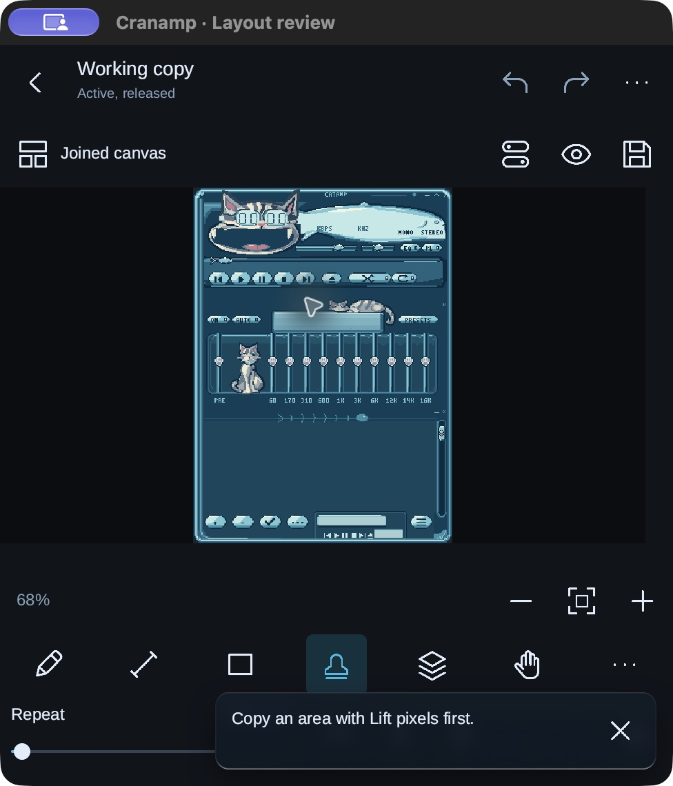
Action errorA dismissible glass notice at the bottom right. Drawing creates no notice.